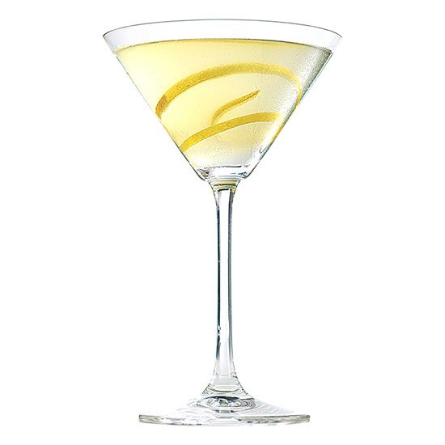

GOLDENBOY

DESCRIPTION
This Mr.Gallochapaval's own smokey martini recipe with all the flavor of the Bourbon!
INGREDIENTS
- 2oz - Bourbon (Jim Beam Double Oak is my preference)
- 2.5oz - Vodka (My recommendation would be a Grey Goose Vodka for a milder flavor, or a Stolichnaya Vodka for a strong yet flavourful cocktail)
- 0.5oz - Dry Vermouth
- Orange Peel
- Ice
STEPS
- Place the Ice inside of a Martini Glass and add the Dry Vermouth. Stir for some secounds and leave aside.
- Put some more Ice inside a Cocktail Shaker. (*NOTE: if you dont have a Cocktail Shaker, a Highball Glass would do the job)
- In the shaker, add the Vodka and the Bourbon and stir for some seconds, until the outer side of the shaker shows some even condensation."STIRRED, NOT SHAKEN!"
- DISCARD ALL THE CONTENTS OF THE MARTINI GLASS...YES! THROW THEM AWAY!
- Place a twist of Orange Peel on the inside of the martini glass.
- Strain the contents of the Shaker into the Martini Glass. Enjoy while listening to Johnny Cash!